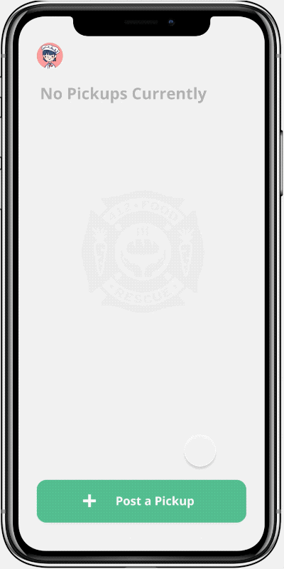
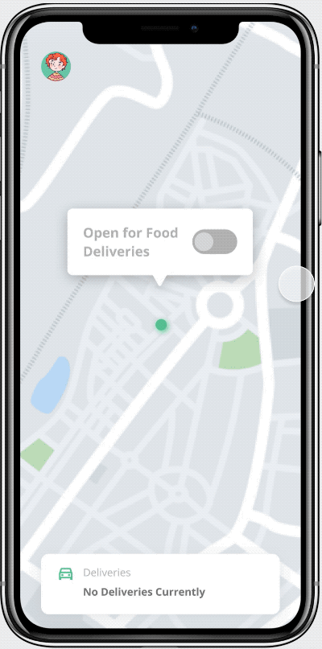
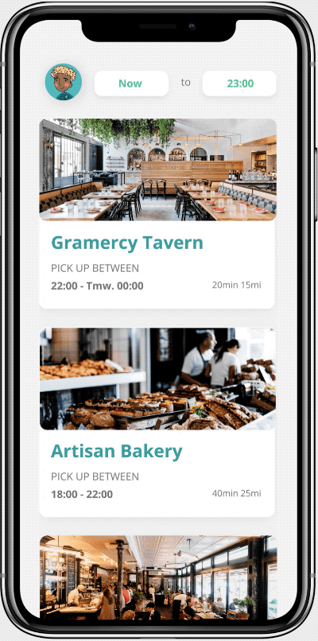
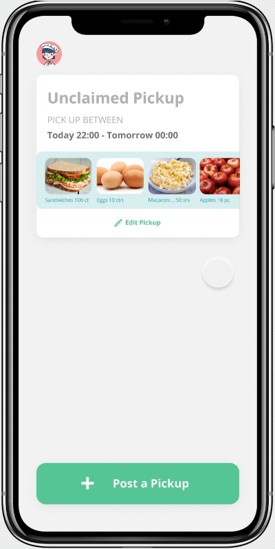
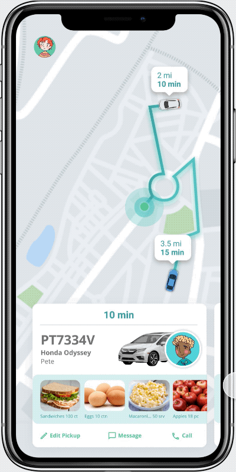
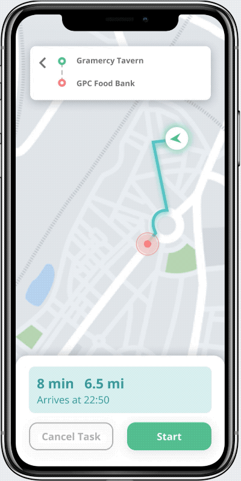
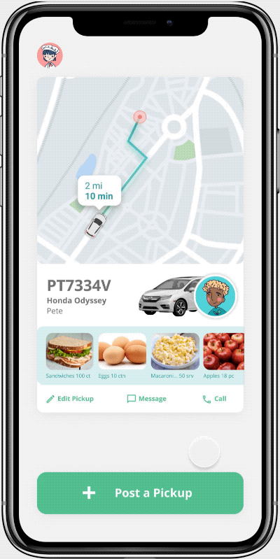
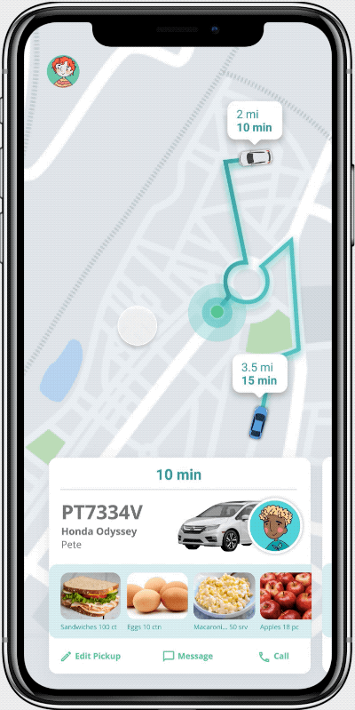
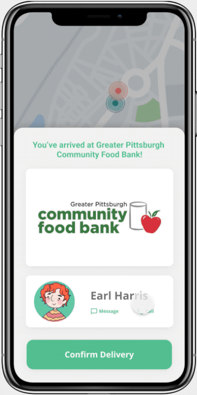
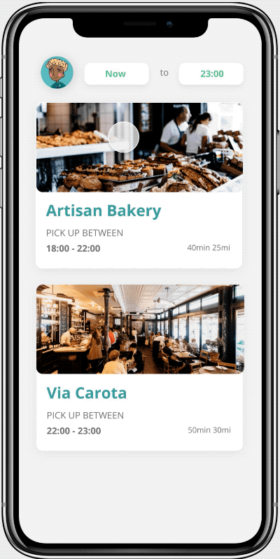

For this project, we designed an app for a startup based on only their objective and no previous knowledge of how their interface looks or works. We chose 412 Food Rescue, which organizes volunteers to help deliver surplus food from restaurants to community NGOs visited by people facing food insecurity.
After the project, I redesigned the interaction flow. See final designs here!
We began the project by reviewing recent events and online forums to know more about Suppliers' struggles to get rid of excess stock and how NGO employees receive surplus food from retailers. We then conducted semi-structured interviews with Brown student volunteers (participating in other programs) to understand their habits and frustrations.
From our research, we created 3 personas that represent our user group. This helps us better visualize their frustrations and define the problem space.
How do we unify the process of delivering surplus food between food providers, volunteers, and community NGOs and keep users engaged?
As a result, we created a unified platform for picking up and delivering food. Suppliers begin by posting pickups. Then, the algorithm will match what food Suppliers are giving out to NGOs that need it, creating a task for volunteers to do. Lastly, the NGO can see what food they are about to receive.
With the design requirements in mind, we mapped out the user flow to ideate on functionalities.
Base on the user flow, we created wireframes to test usability. We got users to read one of the persona cards, then gave them a task to do from the perspective of a volunteer, Supplier, or NGO. The feedback from usability testing helped us identify key user scenarios for focused design iterations.
After initial testing, we integrated the screens into a mid-fidelity wireflow to guarantee a cohesive interaction logic.
After solidifying our interactive flow, I took the lead in turning our app's values into our visual identity. Our goal is to remind users of the social and environmental impact they are making. Therefore, the neo mint green theme creates a fresh look and goes hand in hand with the idea of helping the environment.
Like all school projects done in a time crunch, the Supplier and NGO experiences were not ideal. I took the time to redesign all the screens, focusing on intuitive and cohesive experiences.
May (Supplier) begins by posting a pickup. Earl (NGO) is now open and enables food deliveries. The app creates a task by connecting May's pickup with Earl's open NGO.
Supplier
NGO
Pete (Volunteer) sees what tasks are available when he's free by using the filter on the top. He then selects a task and heads to the Supplier and NGO in the Supplier's pickup time frame. Both May and Earl are notified a volunteer is coming and can check the volunteer's ETA and location.
Volunteer
Supplier
NGO
When Pete arrives, he picks up/delivers the food to the designated area or calls May or Earl. Once he confirms the pickup or delivery, May and Earl's task is auto-completed.
Volunteer
Supplier
NGO
Once Pete completes the task, he receives a thank you note and wins achievements. He can see his accomplishments in his profile.
Volunteer
Volunteer
Lastly, we submitted our volunteer hi-fi prototype to UserTesting.com.
Our hypothesis is that the one-directional design of this app makes navigation user-friendly and allows users to complete the tasks with few distractions. Three UX researchers (alias Abby, Bryan, Caleb) tested our interface, and their responses and quantitatively and qualitatively analyzed.
Our hypothesis was supported because our users were able to successfully use the app to make a delivery in 2:45 minutes. Abby mentioned that seeing her achievements at the end of delivery makes her feel an “adrenaline rush,” and Brian noted that his accomplishment metrics keep him engaged.
For future UX improvements, I would look into:
If you are interested in chatting more about my work, I would love to hear from you. Otherwise, thanks for reading!